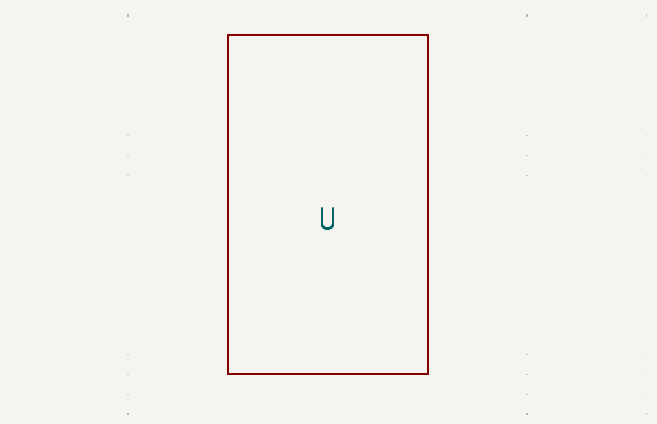

Table of Contents
Assignment
Group assignment
1. Join one of the introduction sessions on Mon, Tue or Wed and document the probing of several different input devices.
2. Pick a group leader who has to create and populate the group assignment page.
Individual assignment
1. Link to the group assignment page and describe what you learned from the group assignment.
2. Add a sensor to a microcontroller board that you have designed and read it.Group
I was unfortunately sick on the day that my group had their introduction session. I will link to it here still, once it is posted.
Datasheet
My final project, the glove controllers, consists only of input devices and a microcontroller capable of transimitting that data. So this week was the perfect time to finally attempt the first iteration of the board.
For the board, I thought I’d again use the ESP32C3, like in the electronic design week’s project. Back then I naively thought I could just plug in the flex sensors into the analog pins and ground and it would work. Only after making the board did I look into how flex sensors are supposed to be used. So this was my opportunity to correct that mistake.
I used this video as a reference for figuring out the circuit for the flex sensors.
So I needed 5 analog pins per glove just for the flex sensors. For the That was more than the ESP32 had available, and I thought I needed multiple chips intercommunicating for that. Instead I was recommended to use a multiplexer to multiply the amount of pins.
There were no footprints in the fablab library for the multiplexers, so I took a stab at making the one for the one I needed.
Taking a look at the datasheet, the two main pieces of information I’m looking for are the pin configuration and the footprint. Finding the pin configuration was already somewhat confusing, as there were three different layouts in the datasheet. Figuring out which one was correct took a while, until I took a closer look at the numbering scheme of the component:

The pin configurations were labeled _4051B, _4052B and _4053B (underscore means I omitted identical strings). 4051 matches the code on the Digikey product site. I hoped this was correct.
Then, finding the footprint. There were multiple diagrams of the physical dimensions of the component, and they too were different.
Multiplexer
On to KiCad.
I was following this tutorial to learn the basics of symbol and footprint creation.
I opened the Aalto fablab kicad library repository and added a new footprint.
According to the datasheet, the distance between centres of pins is 1.27mm. I created a new grid with that spacing.
I created a new pad in the centre of the grid with the following settings. The dimensions of the pads come from the datasheet as well. Not shown is the pad clearance, which I set to 0.5mm.
I immediately deleted the grid I had and made a new one with the correct horizontal offset of 7mm.
The numbering of the pads was also clear in the datasheet.
After the footprint, the symbol. A simple rectangle, like most other component symbols.
Pin properties. Default settings except for the pin names, numbers and electrical types. I tried to match them to the types declared in the datasheet, even though they weren’t one to one matches. I/O became bidirectional, and the different powers pins all became power inputs in KiCad.

Below, the table I referenced.
A test connection showed that the footprint wasn’t correctly linked to the symbol, so it wasn’t appearing in the PCB editor. Also, the other components in the fablab library had a courtyard, so I added that too.
At this point I noticed and referred to the KiCad Library Conventions and oh dear, was there a lot of things to still go through. I didn’t have time to check absolutely everything at this point, so I skimmed through to look for the things that seemed most relevant or important.
Grouping the pins in the symbol better was a logical change.
IMU
For tracking the position and orientation of a glove I picked an Inertial Measurement Unit with an accelerometer and a gyroscope. Specifically, the LSM6DSOX.
The unit itself was intimidating with its large number of pins. Learning about the I2C protocol and referencing the wiring guide was a bit of a challenge, but I eventually found the diagrams that showed the wiring clearly.
The connector type on the IMU is called Stemma. I found a wire bundle with a stemma on one end and four standard male headers on the other. I would use these for the first iteration of the board. This would also spare me from having to create another new footprint, since I was already a bit behind on the assignments.
So the only four pins relevant to the I2C protocol are the power and ground pins, and the SDA and SCL pins for data transfer and clock speed respectively.
Routing
I had all the components placed in the schematic, so I could start routing.
The multiplexer, even with many of its pins unused, was a dense and difficult routing job. Even figuring out the correct orientation for it took a while. I had to move a lot of pins around.
When most of it was routed, I was still missing some ground connections that I had no way of routing. I resorted to using three 0 ohm resistors to jump across some routes and connect the ground to the remaining flex sensor pads.
Edge cuts and mounting holes left, and then the design was done.
Milling
Milling went much better than with the previous assignment. I did mess up one board, still. The bottom of the circuit was barely getting milled but the top half looked fine. The difference was too great to fix with repeated passes, since then the top would get milled too much. I stopped the job and placed another plate.
The second board was successful. I made a point to place the board bottom edge first, and then bending it backwards to try to make the tape connect fully along the whole length of it. With a bit of force, it seemed to work and the board got milled evenly everywhere.